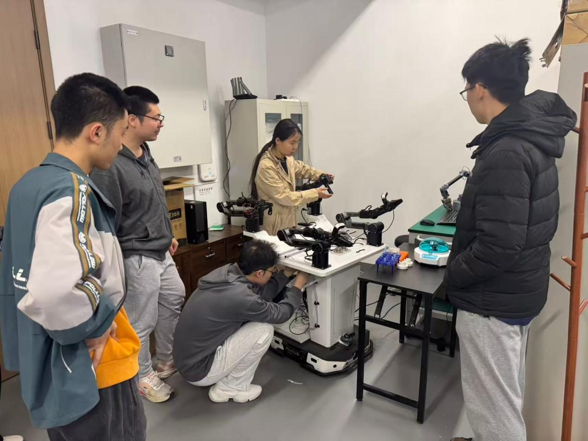

Practical Foundations for Robotic Embodied Intelligence System Development
课程的完整链路是「任务仿真 → 数据工程 → 模型训练 → 推理部署」，最后交的是真机上跑起来的结果。
SAME POLICY · ZERO RETRAINING — 同一策略，未重新训练

面向本科生的机器人与人工智能交叉实践课程，围绕具身智能系统「任务仿真 — 数据工程 — 模型训练 — 推理部署」的完整开发流程，以项目制（PBL）模式培养学生从虚拟环境建模到真实机器人任务执行的工程实践能力。
课程强调理论理解与工程实践结合，学生将动手完成仿真环境搭建、示教数据采集处理、策略模型训练验证到真实机器人部署调试的完整开发闭环，为具身智能、智能制造、智能控制等方向的后续研究奠定实践基础。
A practice-oriented undergraduate course covering the full development loop of robotic embodied intelligence: task simulation, data engineering, model training, and real-robot deployment.

北京大学长聘教授 · 先进制造与机器人学院 · PI Lab 物理智能实验室
一位「从产业里走回讲台」的老师。2002 年本科毕业于浙江大学后先进入产业界，在杭州国芯微电子从芯片设计工程师做到部门经理，带领 80 余人的研发团队，是当时国内少数能独立完成大规模系统级芯片（SoC）设计的团队之一。此后赴欧洲深造，取得芬兰图尔库大学 MBA 与瑞典皇家理工学院（KTH）电子与计算机系统专业博士学位。
2013 年加入 ABB 瑞典研究院，一路做到资深主任科学家（Senior Principal Scientist），2021 年起兼任 KTH 双聘教授，2025 年全职回国加盟北京大学。
主持的欧盟、瑞典及 ABB 集团科研项目累计经费超过 1000 万欧元，成果落地于 ABB 移动 YuMi 机器人、日立能源超高压电力电子控制系统等真实产品；拥有 25 项美欧日授权发明专利，发表国际期刊论文 200 余篇，三度获 ABB 瑞典研究院「年度发明人奖」，并担任 IEEE 工业电子学会执委及 IEEE TII 等多本国际期刊副主编。
实验室主页 LAB HOMEPAGE → pku-pi-lab.github.io

MUKA 莫刻机器人 创始人 · 香港科技大学 博士研究生
Founder, MUKA Robotics · Ph.D. Candidate, HKUST
香港科技大学新兴跨学科领域学部博士生，师从郭毅可教授与韩斯睿教授，并与北京大学仉尚航教授紧密合作。研究方向为机器人多模态生成模型与世界模型，致力于推动机器人在真实环境中的通用智能，已在 CVPR、ICML、AAAI、ICRA 等顶级会议与期刊发表多篇论文，曾就职于腾讯 Robotics X 实验室。
Xiaowei Chi is a Ph.D. candidate at HKUST, supervised by Prof. Yike Guo and Prof. Sirui Han, and working closely with Prof. Shanghang Zhang (PKU). His research focuses on multimodal generative models and world models for robotics, with publications at CVPR, ICML, AAAI, and ICRA. He previously worked at Tencent Robotics X Lab.
个人主页 HOMEPAGE → litwellchi.github.io
具身智能数据与仿真评测基础设施 · Physical AI Infrastructure
机器人训练最缺的往往不是模型，而是数据。光轮智能成立于 2023 年，做的正是这一层 —— 依托全栈自研的仿真平台，产出物理真实、可泛化的合成数据与评测能力：SimReady 仿真资产、第一人称人类数据、工业级仿真评测，再把部署反馈接回来，形成 Real2Sim2Real 的闭环。
在具身智能这条链路上，光轮站的是「数据基础设施」的位置：不造机器人本体，也不做终端应用，而是给几乎所有做机器人的团队供数据。公开资料显示，其合作方覆盖 NVIDIA、Google DeepMind、字节跳动等模型与算力方，Figure AI、1X、智元机器人等本体公司，以及丰田、博世、比亚迪、吉利等行业客户 —— 这个位置也是学生理解「具身智能为什么卡在数据上」最直接的样本。
把自研仿真环境与 NVIDIA GR00T-Dreams 结合，生成厨房、仓库、产线等场景的合成数据，用于微调 GR00T N1.5 视觉-语言-动作（VLA）基础模型。
与 NVIDIA、Google DeepMind、Disney Research 共同参与 GPU 加速的开源物理引擎 Newton，负责高质量仿真资产：扩展 OpenUSD、地形与沙土／积雪等颗粒材质、支持 MPM 可形变地形求解。
与 NVIDIA 联合发布的开源仿真评测框架，用于衡量具身智能策略的能力边界。
公司官网 HOMEPAGE → lightwheel.ai
单位 / 职称待补充
嘉宾简介待补充。报告主题待定，暂定于学期后段进行，具体时间见课程安排。
面向对机器人与人工智能交叉方向感兴趣、希望获得「从算法到系统落地」完整工程经验的本科生。适合计划未来从事机器人具身智能、智能制造、智能控制及相关交叉方向研究或工程实践的学生。课程为项目制高强度实践，需要投入充足的课外实验时间。
每周二 15:00 – 18:00 ｜ 2026.09.08 – 2026.12.22 ｜ 共 15 次课（10.06 国庆假期停课）
讲授课 三教 501（含第一次课）｜ 实验课 新奥工学大楼 B111
五个项目阶段的首课均为理论课+业界嘉宾分享，其余为实践课；期中、期末汇报邀请业界专家评审。
课程相关的问题、补充和答复将在这里向所有人公开。答疑功能启用后，可先查阅已有讨论；若仍有疑问，登录后即可发起提问，教师会在同一讨论中回复。
启用后，使用 GitHub 登录即可提问、补充讨论或回复现有问题。